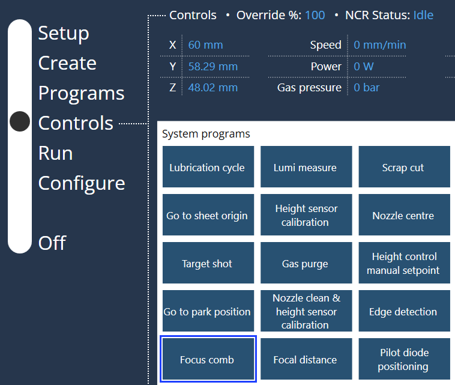
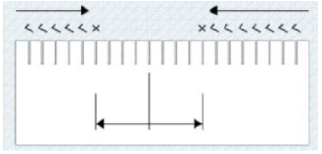
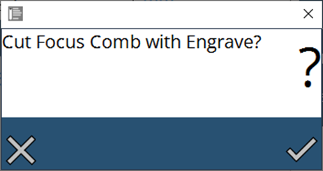
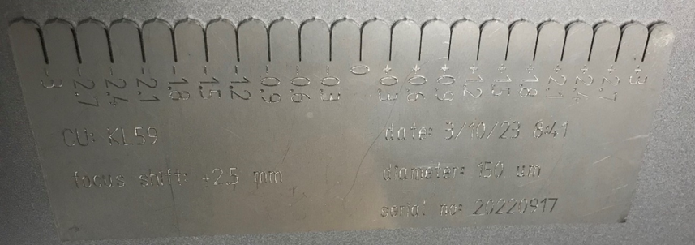

焦点梳
为了精确地朝向板材表面校准焦点位置， 使用焦点梳。焦点梳是改变焦点高度的程序 并调整由加工头公差引起的偏移。通过激活此程序，用户可以检查焦点位置的变化，方法是根据板材的使用及捕获的工作偏移量选择所需的工艺表。最小和最大焦点、序列号、焦点直径 和偏移值可以根据用户要求进行定义。

-
直径150 um和210 um的最小和最大聚焦分别为-3至+3。
-
焦点偏移1值用于确定焦点位置。 用户可以通过在塞尺中检查进度来根据进度调整值。
-
确定焦点梳中的最小切口“K”（= 焦点位置）。
-
使用合适的塞尺（例如 0.25 mm），从左侧和右侧开始，分别检查每个切口。
-
标记塞尺粘在左右两侧的切口。
-
计算焦点偏移，并在 焦点偏移1 下输入。
-
示例：
旧焦点偏移A，单位为mm，最小切口K，单位为mm。 焦点偏移 = A + K。
-
用户还可以在程序运行期间监控焦点直径。
-
确认消息下方显示启动切割焦点梳的过程 以及要雕刻的数据条目
Figure 1. 样本输出有关更多详细信息，请参阅机床操作手册。